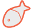

A/An [description] for [search for species].
A/An [description] for [search for species occurrences].
A/An [description] for [Spatial Portal] will go here
A/An [description] for [see species occurrences near you].
A/An [description] for [purpose].

A/An [description] for [purpose].